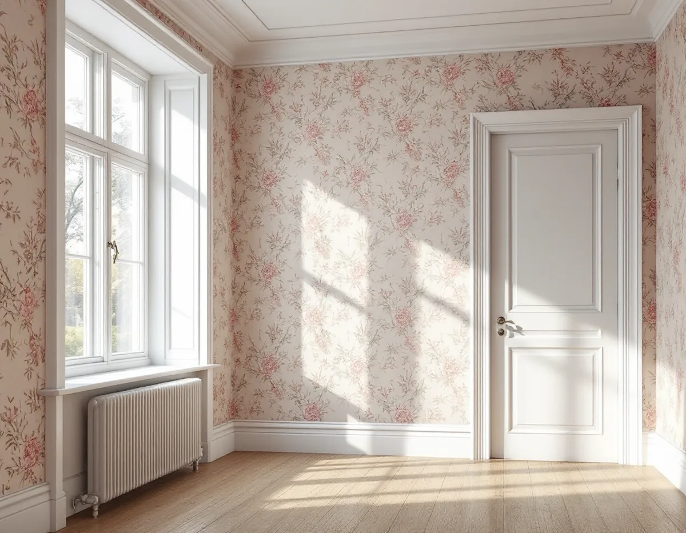
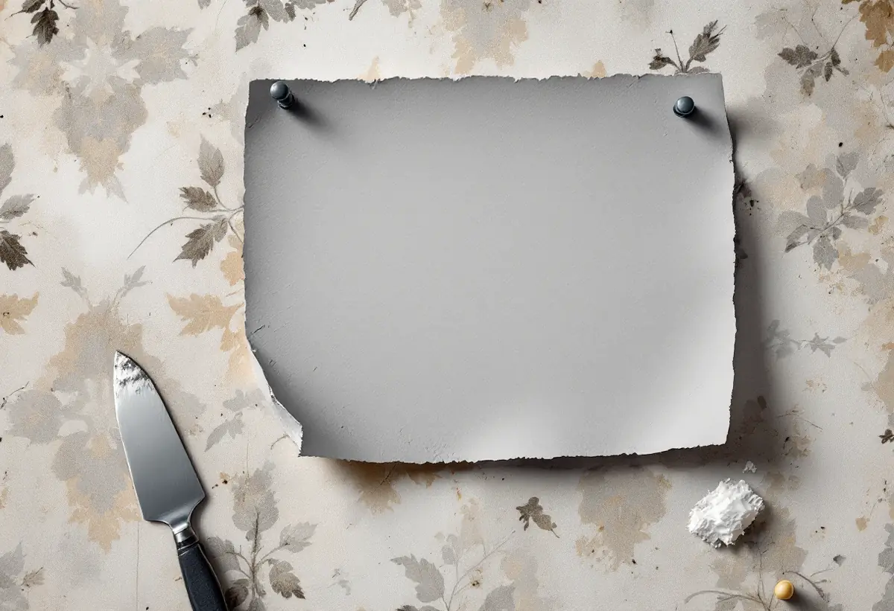

Platsbesök
Vi räknar lagren och känner efter var tapeten har släppt.
En äldre villa i Sollentuna kan ha flera lager tapet på väggarna. Då blir frågan om ett nytt lager kan sättas ovanpå, om väggen ska skrapas ner eller om det räcker att måla över. Geal Entreprenad AB tapetserar i villor, radhus och bostadsrätter i Sollentuna och provar väggen innan vi föreslår något.

Kommunens översiktsplan berättar att järnvägen mellan Stockholm och Uppsala byggdes 1866, med Rotebro som första station i Sollentuna. I början av 1900-talet tillkom stationer i Tureberg och Norrviken och senare i Helenelund och Häggvik. Även småhus och villor började byggas i början av 1900-talet. Efter 1945 byggdes allt fler flerbostadshus, och under perioden 1965–75 uppfördes flera miljonprogramsområden.
Planen slår fast att Sollentuna ska bevara den prägel av villastad som växte fram under 1900-talets första hälft. I ett hus från den tiden kan väggarna ha fått nya ytskikt många gånger, och varje lager påverkar hur nästa fäster.

Byggnadsvårdsföreningens artikel om underlag för tapetsering, skriven av en målarmästare, beskriver ett enkelt prov. Blöt en dagstidning och fäst den med häftstift mot den gamla tapeten. Låt den sitta i tolv timmar och ta sedan ner den. Har tapeten under sträckt upp sig utan blåsor och utan att släppa tål den ett lager till. Annars bör den skrapas bort ända ner till putsren yta.
Artikeln varnar för att fler än fyra skikt tapet på väggen kan ge blåsor och dålig vidhäftning, och att bronstryck i en gammal tapet kan slå igenom den nya om man inte grundar med alkydfärg eller shellack. Som befintligt underlag anges högst tre tapetlager som sitter bra mot varandra och mot väggen. Lösa partier skrapas upp, även vid foderlister, socklar och vinklar, och skarvar och kanter spacklas ut eller slipas ner innan väggen limmas och tapeten sätts upp.
Ett alternativ är att måla över tapeten. En husägare med ett funkishus från 1940 ville måla på tapetserade väggar med träfiberskivor under och undrade om färgen andas eller om en modern plastfärg går lika bra. Föreningen svarade att färgtillverkaren bör tillfrågas om vilka underlag som fungerar och vilken underbehandling som behövs, eller att man kan välja traditionella färger som lim- eller linoljefärg. Eftersom huset i övrigt hade hygroskopiska material var det klokt att fortsätta på den principen.
Ett annat svar gäller veckade hörn i ett rum från sekelskiftet som renoverats på 1970-talet och skulle målas om. Där skär man upp hörnen och river bort det som är löst. Sedan rivs remsor av målarpapp, 10–15 cm breda, som klistras med tapetklister, viks ihop och får svälla i en plastpåse i 5–10 minuter. Den ena remsan läggs med en centimeter över hörnet, den andra in i hörnet utan överlapp, och när allt har torkat slipas kanterna.
Planerar du en dyrare tapet längre fram men vill snygga till rummet nu, kan limfärg på den gamla tapeten verka enkelt. Föreningen avråder: limfärgen ger ett sämre underlag för den tilltänkta fintapeten. Bättre är att tapetsera med en annan papperstapet så länge.
Vi kan sätta upp en enklare papperstapet nu och den slutliga senare. Ska huset även målas utvändigt finns mer under målare i Sollentuna.
Vi räknar lagren och känner efter var tapeten har släppt.
En blöt tidning får sitta över natten på en undanskymd del av väggen.
Du ser vad ett nytt lager kostar jämfört med att skrapa ner.
Lösa partier skrapas upp och skarvar spacklas eller slipas.
Väggen limmas och den nya tapeten sätts upp.
Vi går igenom rummet och lämnar resten av tapeten till dig.
Både att tapetsera och att måla väggar är rotarbete enligt Skatteverket. I villa och radhus ska arbetet ske i en bostad du äger, och i bostadsrätt innanför lägenhetens tak, väggar och golv och inom det du ansvarar för enligt stadgarna.
Avdraget är högst 30 procent av arbetskostnaden, med ett tak på 50 000 kr per person och år för rot och 75 000 kr för rot och rut sammanlagt. Geal gör avdraget direkt på fakturan, medan tapet, klister och spackel betalas fullt ut.
Om väggen tål ett nytt lager eller måste skrapas ner gör störst skillnad, följt av antalet rum och tapetens mönster. Efter ett gratis platsbesök får du ett skriftligt kostnadsförslag.
Fasad, fönster och invändig målning.
Målare i Stockholm →Takbyte, takbesiktning och plåtarbeten.
Takläggare i Sollentuna →Norrviken, Tureberg och Edsberg.
Takrenovering i Sollentuna →Tillbyggnad, tomtdelning och lov.
Byggföretag i Sollentuna →Buller, ljudglas och radhus i Sollentuna.
Fönsterbyte i Sollentuna →Täta gamla fönster med ventilationen i åtanke.
Fönsterrenovering i Sollentuna →Radhus i Sjöberg och villor nära stationerna.
Golvläggare i Sollentuna →Massivt trä eller lamell – vad går att slipa.
Golvslipning i Sollentuna →Villastad och radhuslängor.
Köksrenovering i Sollentuna →Radhusplåt, bleck och rännor i Sollentuna.
Plåtslagare i Sollentuna →Ansökan, solceller och radhus.
Takbyte i Sollentuna →Villastad, radhus och ventilationen.
Badrumsrenovering i Sollentuna →Villor och radhus i Sollentuna.
Fasadrenovering i Sollentuna →Villor och radhus i Sollentuna.
Målare i Sollentuna →Altaner, uterum och bryggor.
Snickare i Sollentuna →På höjden, nya byggregler och ritningar.
Tillbyggnad i Sollentuna →